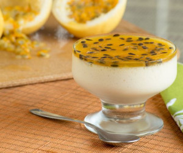

Home
Heimdall's Mousse

A sweet dessert, perfect for the summer.
A refreshing pudding like dessert made with condensed milk, cream and passion fruit juice.
Ingredients
- Concentrated Passion Fruit juice
- A can of condensed milk
- A can of milk cream
Instructions
- In a bowl mix the condensed milk and cream, save the can.
- Using the can as measurement add one can of concentrated juice.
- Mix everything well and let it cool on the fridge for about 3 hours or until firm.
Tips
- Using the can as measurement you can multiply every ingredient for large batches.
- Decorate with mint or other refreshing herbs for added flavor.